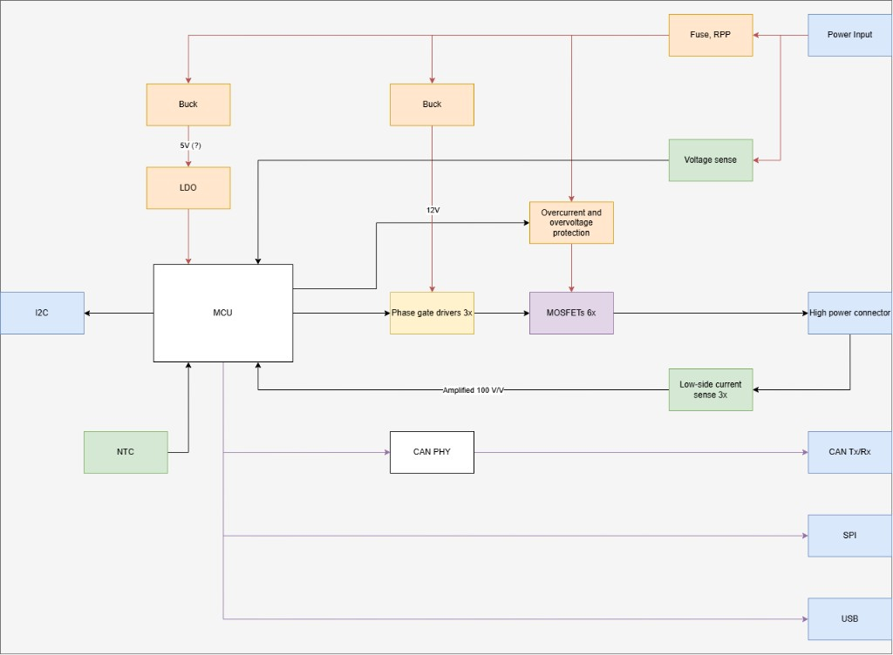
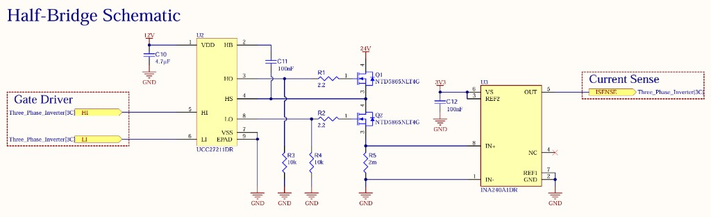

Power electronics · Robotics · In progress
Three-Phase Inverter
I want to create a robotic actuator from scratch, to learn more about robotics, and as a joint in a 6DOF robotic arm I am designing.


Notable features
- Hardware synchronized dual-ADCs for low-side two-phase current sensing with KCL reconstruction for third phase.
- Mini-USB for easy computer interface, SWD for debugging, CAN-bus and I2C for embedded control.
- Independent hardware overcurrent trip.
- Designed using Altium Designer to JLCPCB’s manufacturing contraints.
- Full schematic can be found here.
Project details (Situation · Task · Action · Result)
Situation
I want to create a robotic actuator from scratch, to learn more about robotics, and as a joint in a 6DOF robotic arm I am designing.
Task
I want to design the electronics and FOC control loop before I design the actuator itself, and will likely use an open source actuator like OpenQDD in its place to begin.
Action
I decided on the architecture, went through component selection, and I am now making the schematic. I’m also simulating the system in Python to understand the physics, as well as Clarke and Park transforms, before the board arrives.
Result
To be determined!